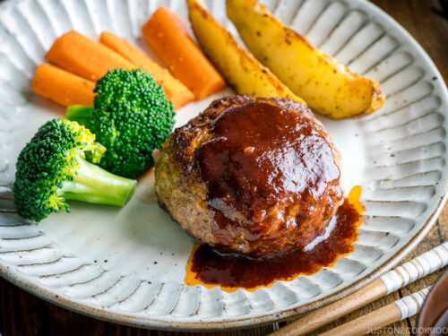

Japanese Hamburger Steak Recipe

Description
I still remember vividly how my mom and I
spent many evenings making Japanese Hamburger Steak.
If I was home, she would call me around 4:30 PM
and always encouraged my presence in the kitchen.
Unless I was in the middle of a novel that
I couldn't stop reading, I didn't mind helping
her out most of the time. That's how I learned
to cook Japanese food from her.
Japanese Hamburger Steak is a popular dish enjoyed
both at home and at Yoshoku (Japanese style western food)
restaurants. It's a steak made from ground meat
and usually served with rice rather than buns.
Ingredients
For the hamburger patty
- 1/2 onion
- 1 Tbsp olive oil
- 3/4 lbs ground beef and pork combination
- beef-to-pork ratio of 2:1
- 1/2 tsp salt
- Freshly ground black pepper
- 1/2 tsp nutmeg
- 1/3 cup panko
- 2 Tbsp milk
- 1 large egg
For cooking the hamburger
- 1 Tbsp olive oil
- 3 Tbsp red wine
For the sauce
- 1 Tbsp unsalted butter
- 3 Tbsp ketchup
- 3 Tbsp tonkatsu sauce
- you can use worcestershire sauce instead
but you must add sugar to balance out the
sourness as tonkatsu sauce is sweeter than
worcestershire sauce
- 3 Tbsp red wine
- 3 Tbsp water
Cooking instructions
To make the hamburger patties
- Gather all the ingredients
- Dice onion
- Heat oil in large pan over medium heat and add onions
- Sauté the onions until tender and almost translucent.
Transfer to a large bowl and let it cool.
- Once the onions are cool, add the ground beef and
pork to the bowl. Add the salt, black pepper as
you like, and nutmeg.
- Add the milk, panko, and egg.
- Start mixing it all together with a silicone spatula or spoon.
- Then, switch to mixing by hand and knead the mixture
until it's sticky and pale.
- Divide the mixture into quarters (4 oz or 113 g each)
or six smaller portions. Scoop out one portion.
- Toss it from one hand to the other repeatedly about
five times in order to release any air inside the mixture
- Tip: Without releasing the air inside, the hamburger
steaks will likely crack while cooking.
- Make an oval-shaped patty and place on a tray or plate.
Repeat with the remaining portions. Cover the patties with
plastic wrap and keep them in the refrigerator for at least
30 minutes before cooking so that the meat combines well
and the fat solidifies.
To cook the hamburger patty
- In a large pan, heat the oil over medium heat and place the
patties gently into the pan. Indent the center of each patty
with two fingers because the centers will rise with the heat.
- Cook the patties until browned on the bottom side, about 3 minutes.
Then carefully flip and cook for another 3 minutes until browned.
- Add the red wine for steaming the patties and reduce the heat to low.
Cover the pan with a lid and cook for 5-7 minutes to thoroughly
cook the inside of the patties
- (adjust the cooking time depending on the thickness of the patties).
- Uncover and check that it's done by inserting a skewer;
if clear juice comes out, it's done. Increase the heat to medium
to let the alcohol finish evaporating. When it's almost finished,
transfer the hamburger steaks to individual plates.
Do not wash the pan as you will make the sauce next using the pan juices.
To make the sauce
- In the same frying pan (without cleaning),
add the unsalted butter, ketchup, and tonkatsu sauce.
- Add the water and red wine for the sauce to the pan.
- Mix well together and bring the sauce to a simmer
over medium heat; let the alcohol evaporate.
- When the sauce thickens (and you can draw a line
on the bottom of the frying pan with a spatula),
remove from the heat. Drizzle the sauce over the
hamburger steaks.
Home